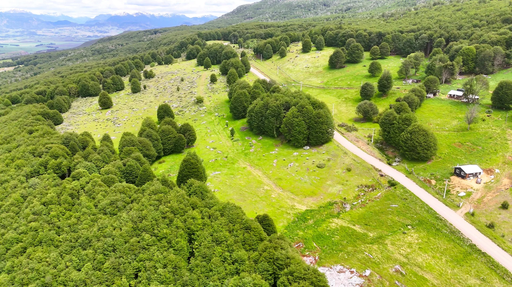

A piece of land on a river, with mountains all around and room to build at your own pace: that is what leads many people to look into how to buy land in Patagonia, Chile. To make sure the dream rests on solid ground, it pays to understand the rules before you sign.
Using official sources, this guide explains what a rural plot (parcela) is under Chilean law, what "rol propio" means, which documents to check, whether foreigners can buy land in Chile, and which legal changes are under discussion.
Outside urban limits, rural properties are subdivided under Decree Law 3.516 of 1980. Each resulting lot must have at least 0.5 physical hectares (5,000 m²), except for the exceptions set out in the law itself.
Decree Law 3.516 also prohibits changing the use of the lots, under articles 55 and 56 of the General Law of Urban Planning and Construction (LGUC). Building a home in a rural area is governed by article 55 LGUC. Since 2022 the SAG has reviewed subdivisions more strictly, and the Supreme Court has ruled both ways: in December 2025 it upheld the rejection of a subdivision in Los Lagos, and in February 2026 it upheld a SAG certificate issued in line with the decree.
The rol de avalúo is the tax roll number the Internal Revenue Service (SII) uses to identify each property. When land is subdivided, the lots come from the parent roll number (rol matriz). Until the SII assigns a number to each lot, there is a "Certificate of Assignment of Tax Roll Numbers in Process" (rol en trámite). At the first sale, the notary checks that the provisional number matches.
"Rol propio" is a market term, not one defined by the SII. It describes a lot that already has its own tax roll number, as opposed to one still under the parent roll or with a number in process. With that number you can request the tax valuation certificate from the SII, which shows the property's registered use.

The Water Code has a special rule for wells used for drinking and domestic purposes. If the property will rely on a well, review its status with your lawyer or the DGA before buying.
Yes. Foreigners can buy property in Chile without residency or a visa. What they need is a RUT (tax ID number) from the SII. A non-resident usually applies through a representative domiciled in Chile, using form F4415. The sale is signed as a public deed before a notary and registered with the CBR. According to secondary sources, if the property generates income, a non-resident must have a tax representative and pays the Additional Tax (Impuesto Adicional).
Article 7 of Decree Law 1.939 prohibits nationals of neighbouring countries (Argentina, Bolivia and Peru) from acquiring ownership or other property rights, or holding possession or tenancy, of real estate located wholly or partly in declared border zones. The ban also covers companies headquartered in those countries, with 40% or more of their capital held by their nationals, or controlled by them. The President may authorise exceptions by individual supreme decree.
If you are from a neighbouring country, check with DIFROL (the border directorate) or the relevant CBR whether the property's municipality is a declared border zone.
A bill is going through Congress that seeks to restrict residential use of 0.5-hectare lots and to create a new category of "rural residential complexes", according to the Ministry of Housing (Minvu). As it may move forward, check its status on camara.cl or senado.cl before you buy, and ask your lawyer how it could affect the land you are considering.
Under Decree Law 3.516, each lot in a rural subdivision must have at least 0.5 physical hectares (5,000 m²), except for the exceptions in the law.
A lot with rol propio already has its own tax roll number from the SII, so you can request its tax valuation certificate. With rol en trámite, the lot still depends on the parent roll.
No. They need a RUT from the SII. Only nationals of neighbouring countries face restrictions, and only in declared border zones.
The certificate of mortgages, encumbrances and prohibitions issued by the Real Estate Registrar.
Inmobiliaria El Roble sells plots with rol propio and direct financing. In Aysén we have Horizontes de Mañihuales: 4 plots of 0.53 to 1 ha on the Mañihuales River, with access via a right of way and electricity feasibility (3 of 4 available), and Parcelas Don Guillermo, on the Emperador Guillermo River, right on the Carretera Austral, where 1 plot remains. See all our projects or get in touch. If you are still deciding, read our guides to living in Coyhaique and how to get to Coyhaique.
This guide is for information only and does not replace advice from a lawyer.